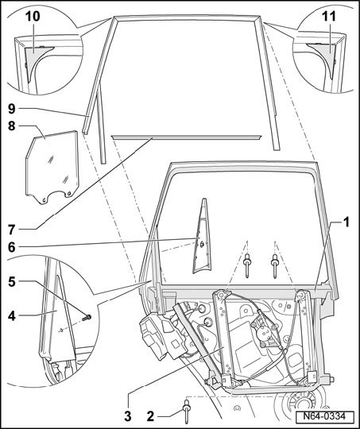

Individual Window Frame Components - Assembly Overview
Individual Window Frame Components - Assembly Overview

1 - Window frame
- Riveted to assembly carrier in the illustration.
2 - Pop rivet
- Qty. 4
- Join window regulator to window frame.
3 - Window regulator
4 - Trim
- The outer trim is secured by a bolt.
5 - Screw
6 - Trim
- The inner trim is engaged in window frame.
7 - Window recess seal
- Inserted on flange.
8 - Door window
9 - Outer window guide
- Inserted on flange.
10 - Cover cap
- Pushed between window frame and upper rear window guide.
11 - Cover cap
- Pushed between window frame and upper front window guide.